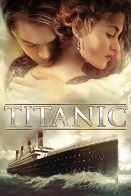
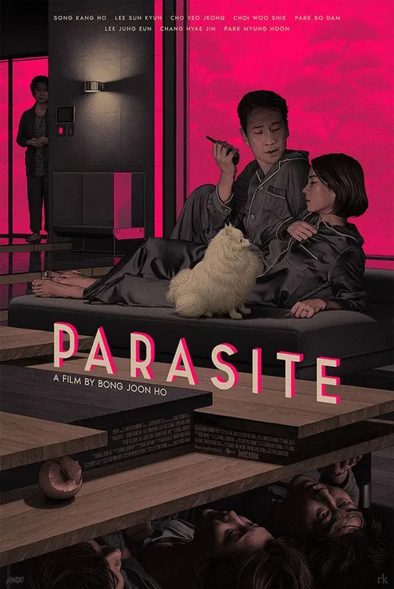

Star Wars (1977)
George Lucas combined mythic storytelling and cutting-edge effects to launch the blockbuster era.
- Material
- 35 mm color film with optical and miniature effects
- Size/Weight/Shape
- Runtime: 121 minutes; 2.35:1 CinemaScope aspect ratio
- Estimated Age
- Released in 1977
- Preservation State
- Digitally restored; multiple special editions and 4K scans
- Location Found
- Industrial Light & Magic archives and Lucasfilm vaults
- Likely Purpose
- Modern myth blending space opera and hero’s journey for mass audiences
- Evidence of Use
- Spawned franchise spanning films, TV, games, and cultural lexicon
- Manufacture Clues
- Written and directed by George Lucas; groundbreaking practical effects and sound design
- Found With
- Other 1970s sci-fi works like *Close Encounters of the Third Kind*
- Burial or Habitat Context
- Filmed in Tunisia and UK studios; set in the fictional galaxy far far away
- Symbolism
- The Force as balance between light and dark; mythic good vs evil archetype
- Comparison
- Comparable to *The Lord of the Rings* for epic scale and world-building
- Cultural Context
- Post-Vietnam American cinema’s turn toward escapism and hopeful heroism

Titanic (1997)
James Cameron merged epic romance and technical innovation, creating one of the most successful films in history.
- Material
- 35mm color film with digital post-production
- Size/Weight/Shape
- Runtime: 195 minutes; 2.35:1 aspect ratio
- Estimated Age
- Released in 1997
- Preservation State
- Digitally restored and remastered in 3D for 2012 re-release
- Location Found
- 20th Century Fox Studios and RMS Titanic, North Atlantic
- Likely Purpose
- Epic historical romance illustrating class divide and human tragedy
- Evidence of Use
- Over $2 billion box office; multiple Academy Awards
- Manufacture Clues
- Directed by James Cameron; practical ship sets combined with early CGI
- Found With
- Historical dramas such as *Gone with the Wind* and *The English Patient*
- Burial or Habitat Context
- Set aboard the RMS Titanic during its 1912 voyage
- Symbolism
- The sinking ship mirrors the collapse of social hierarchies and fragile human ambition
- Comparison
- Comparable to *Romeo and Juliet* and *The Great Gatsby* for themes of doomed love
- Cultural Context
- Late-1990s fascination with spectacle, nostalgia, and human resilience

The Matrix (1999)
The Wachowskis fused cyberpunk philosophy and revolutionary effects, altering how action and reality were portrayed.
- Material
- 35 mm film with digital effects compositing
- Size/Weight/Shape
- Runtime: 136 minutes; 2.39:1 aspect ratio
- Estimated Age
- Released in 1999
- Preservation State
- Digitally restored and remastered in 4K Ultra HD
- Location Found
- Warner Bros. Studios, Los Angeles
- Likely Purpose
- Philosophical sci-fi exploring reality, technology, and freedom
- Evidence of Use
- Massive global impact; spawned sequels and aesthetic imitations
- Manufacture Clues
- Written and directed by Lana and Lilly Wachowski; noted for bullet-time camera innovation
- Found With
- Other cyberpunk works such as Ghost in the Shell and Dark City
- Burial or Habitat Context
- Set within a virtual simulation of late-20th-century Earth
- Symbolism
- The red pill and blue pill represent truth versus ignorance; mirrors Plato’s Allegory of the Cave
- Comparison
- Comparable to Inception and Tron for themes of perception and control
- Cultural Context
- Emerging internet era reflections on identity, corporate systems, and free will

Parasite (2019)
Bong Joon-ho’s genre-bending masterpiece made history as the first non-English Best Picture winner.
- Material
- Digital 4K color film
- Size/Weight/Shape
- Runtime: 132 minutes; 2.35:1 aspect ratio
- Estimated Age
- Released in 2019
- Preservation State
- Contemporary; available on streaming and physical media
- Location Found
- Seoul, South Korea
- Likely Purpose
- Critique of economic inequality and social stratification
- Evidence of Use
- Won Palme d’Or and multiple Academy Awards
- Manufacture Clues
- Directed by Bong Joon-ho; genre-blending narrative
- Found With
- Other South Korean realist dramas like *Burning*
- Burial or Habitat Context
- Depicts urban class divide through domestic architecture
- Symbolism
- Basement and stairs as visual metaphors for social hierarchy
- Comparison
- Parallels *Snowpiercer* and *Shoplifters* in social commentary
- Cultural Context
- Reflects global concerns about wealth disparity and mobility